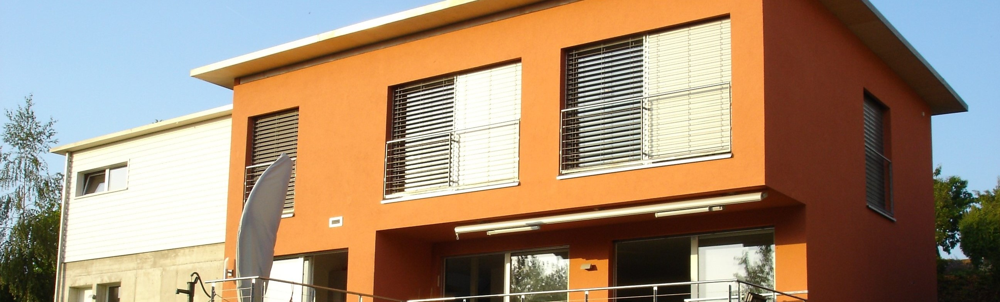
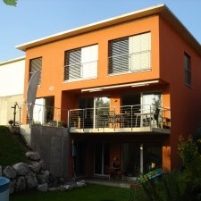

BEWIK HOME
Grüessech!
Wir freuen uns, dass Sie unsere Internet-Präsenz besuchen. Als modernes
Kleinunternehmen wollen wir Sie gerne auch online mit allen Informationen rund um unsere Angebote versorgen.
BEWIK wurde als "Private Familienplatzierung Kerzers Daniela Hunkeler" am 1. Januar 2005 in Kerzers
gegründet.
Die Inhaberin, Daniela Hunkeler-Stalder, verwirklichte damit nicht nur ihre Vision einer professionellen,
individuellen und effizienten Betreuung von Klienten im familiären Umfeld sondern wagte damit als dipl.
Pflegefachfrau und ehemalige SPITEX-Pflegedienstleiterin auch den Schritt in die berufliche Selbständigkeit
BEWIK bietet betreutes und begleitetes Wohnen sowie Wohncoaching an.
Betreutes Wohnen in Kerzers

In unserem eigenen, grosszügigen Einfamilienhaus bieten wir ein betreutes Wohnen an,
hier
leben eine 4-köpfige Familie sowie bis zu 4 Klienten unter einem Dach. Unsere Gäste haben eine leichte
körperliche und/oder geistige Beeinträchtigung oder befinden sich in einer psychisch schwierigen
Lebenssituation. Sie geniessen einerseits die Integration und Geborgenheit im Familienalltag, besitzen aber
alle
eigene Zimmer und die entsprechende Privatsphäre. Dieses betreute Wohnen kann als selbständiges Angebot aber
auch in Zusammenarbeit mit Fachstellen und Institutionen geschehen. Betreffend Details und Finanzierung
eines
Aufenthaltes nehmen Sie bitte Kontakt mit uns auf.
Begleitetes Wohnen in Kerzers

Als nächster Schritt nach einem betreuten Wohnen ermöglichen wir ein begleitetes
Wohnen
in einer externen Wohngemeinschaft (Mietwohnung).Hier bieten wir 3-4 Personen mit Beeinträchtigung einen
stabilen Rahmen, um die Entwicklung und Erhaltung der Wohnkompetenz zu fördern Falls Sie das begleitete
Wohnen
noch gar nicht kennen oder erst im Internet davon erfahren haben: Wir würden uns freuen, von Ihnen zu hören!
Bitte lassen Sie uns Ihre Wünsche und Fragen wissen, gerne beraten wir Sie ausführlich und unverbindlich.
Treten
Sie mit uns in Kontakt.